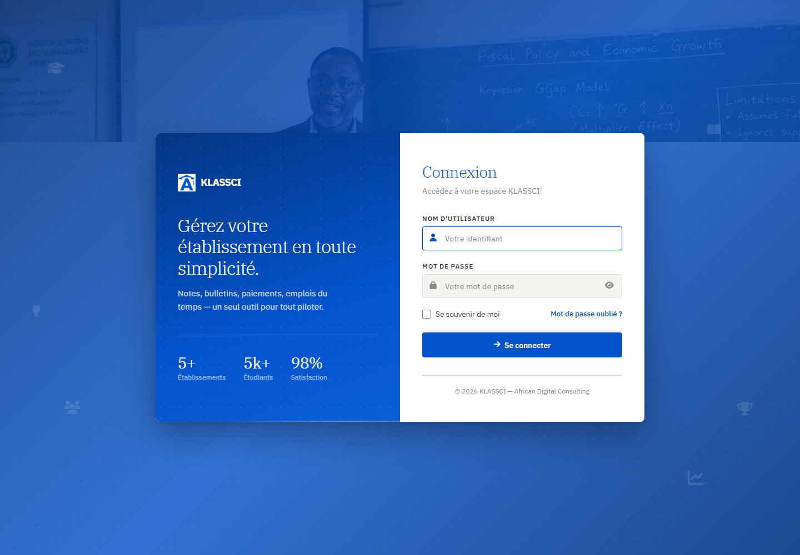
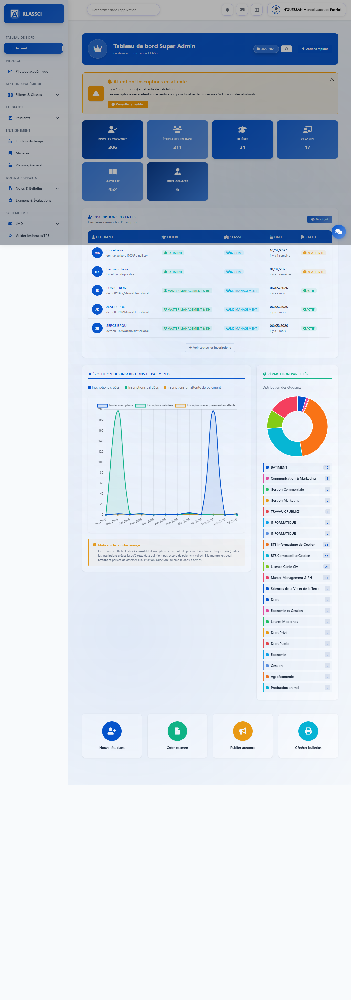
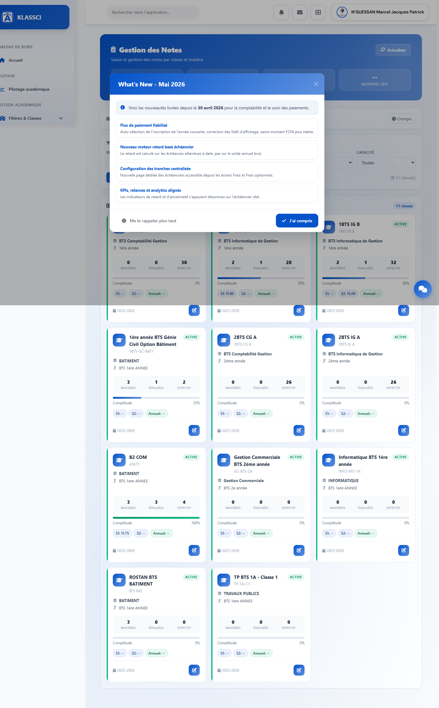
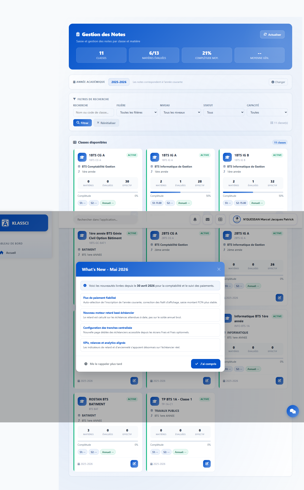
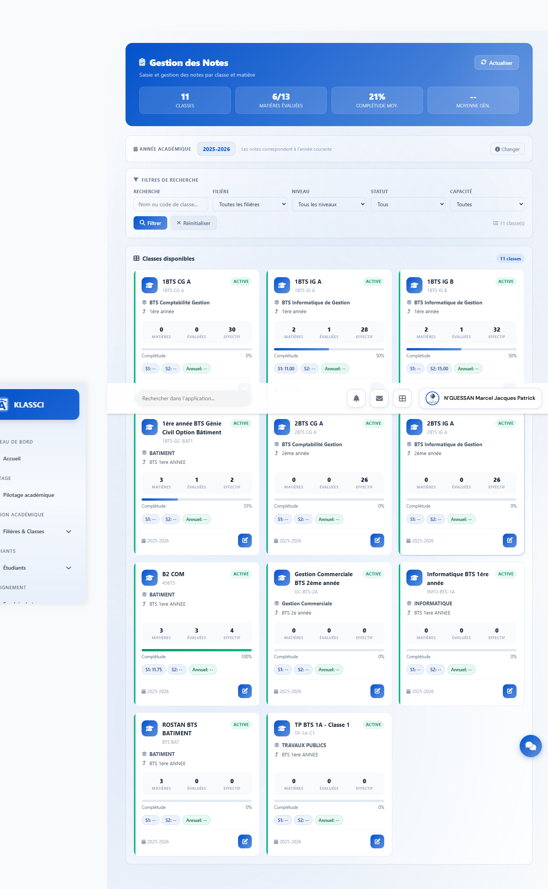
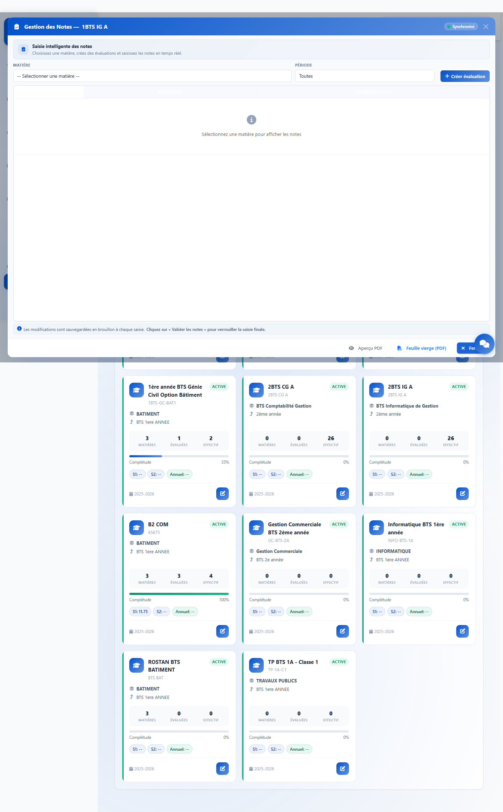
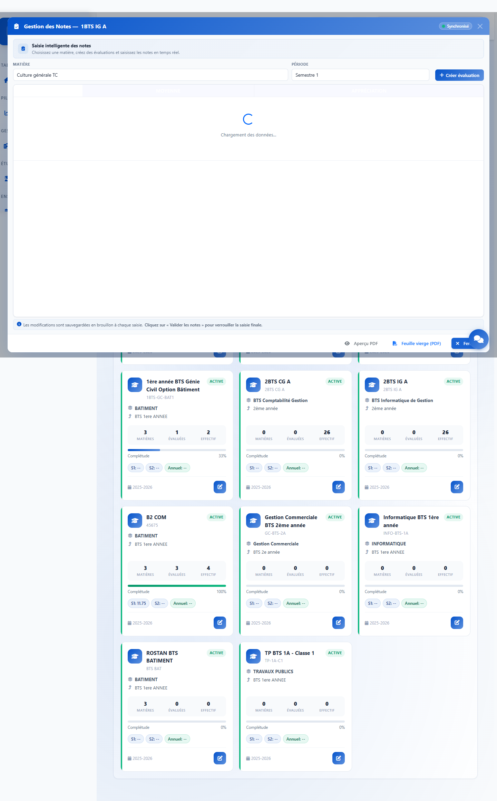
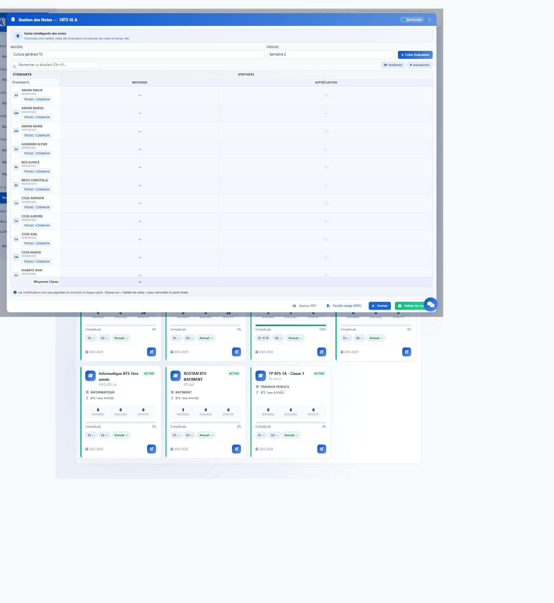
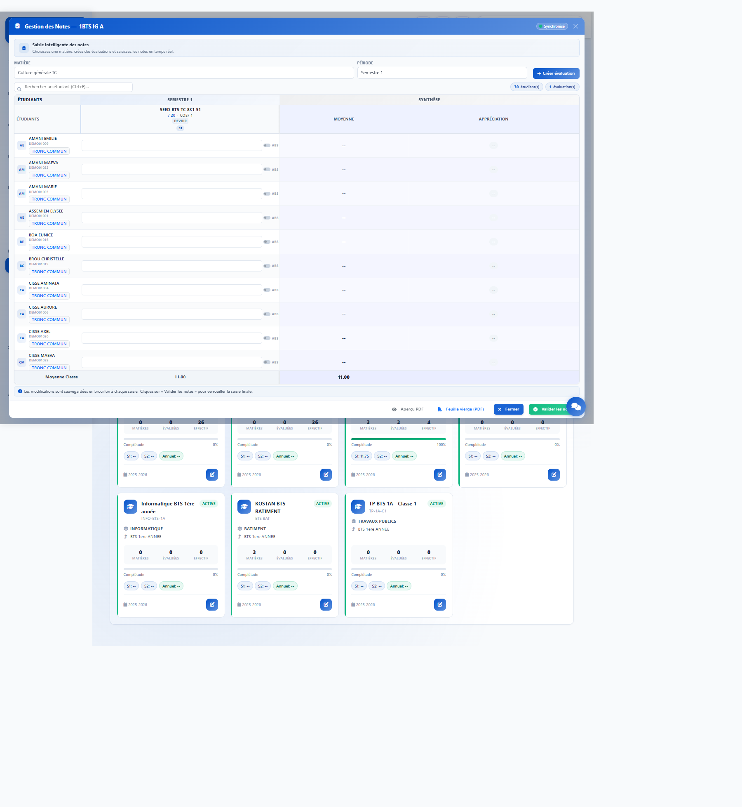
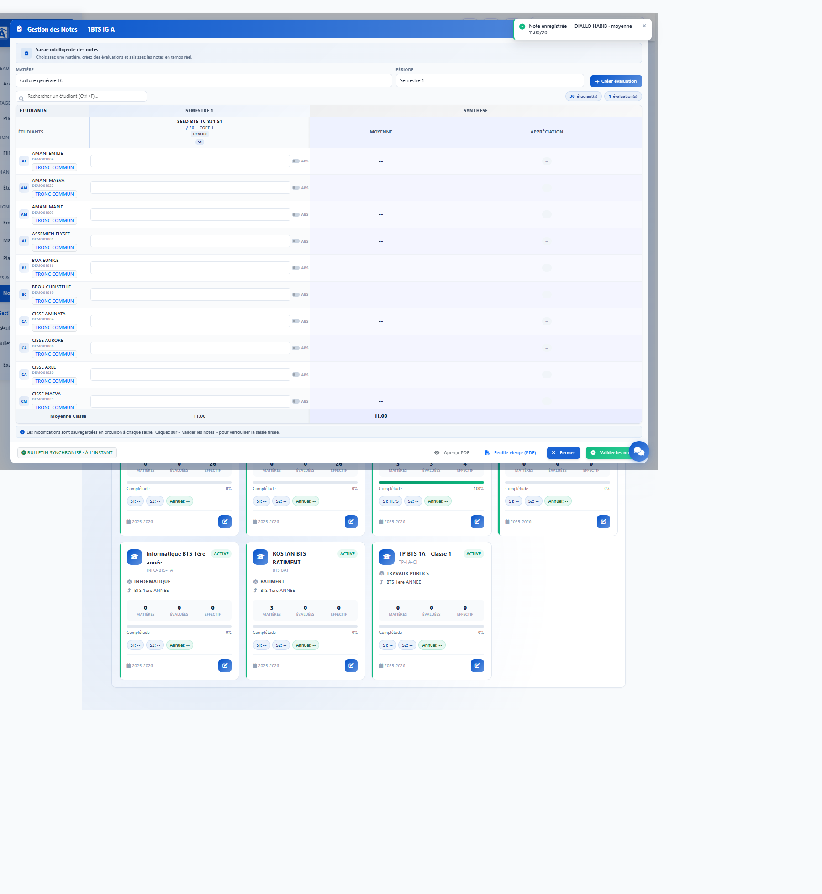

KLASSCI
Rapport interne · test E2E production
Notes tronc commun S1, preuve navigateur et API.
Validation du correctif livré sur presentation.klassci.com, avec un étudiant déjà orienté en spécialité mais encore rattaché à sa classe tronc commun pour le semestre 1.
01
Synthèse
Le cas TC S1 est validé sur le tenant `presentation`.
Le test cible la classe 1BTS IG A, identifiant 98, et l’étudiant DIALLO HABIB, identifiant 831. Son parcours indique une phase Tronc commun au semestre 1 puis une phase Spécialisation au semestre 2.
200API cohorte S1
30étudiants TC S1 retournés
OKnote S1 saisissable
| Contrôle | Résultat |
|---|
| Parcours BTS | OK, `source_model = phase_based`, TC S1 classe 98, spécialité S2 classe 99. |
| API classe TC S1 | OK, étudiant 831 présent avec `eligible_semesters: [1]` et `phase_label: Tronc commun`. |
| API classe TC S2 | OK, étudiant 831 absent de la cohorte S2. |
| UI Notes | OK, ligne DIALLO HABIB visible en S1, badge Tronc commun, champ de note actif. |
| Micro-saisie | OK, passage temporaire de 11.00 à 11.25 accepté, puis restauration à 11.00. |
| Logs post-test | OK, aucun nouvel item d’erreur notes dans l’extrait court après le scénario. |
02
Preuve CLI
Le parcours étudiant place bien DIALLO HABIB en TC au S1.
Commande
klassci-cli.ps1 bts-tc:student-journey presentation 831 1
| Phase | Classe | Semestres | État |
|---|
| Tronc commun | 1BTS IG A · classe 98 | S1 à S1 | clôturée le 31 mai 2026 |
| Spécialisation | 1BTS IG B · classe 99 | S2 à fin | active |
Cette donnée est la base du test: l’étudiant ne doit plus dépendre uniquement de son inscription active actuelle pour apparaître dans la classe TC. Il doit être réintégré dans la cohorte TC quand l’évaluation porte sur le semestre 1.
03
Session authentifiée
Connexion au compte superadmin de `presentation`.

Étape 1, écran de connexion.

Étape 2, tableau de bord authentifié.
04
Écran Notes
La classe TC `1BTS IG A` est visible dans Notes.

Étape 3, page Notes, classe 1BTS IG A présente.
05
Écran réel
Le modal de nouveautés est capturé puis fermé.

Étape 4A, modal bloquant réellement rencontré pendant l’E2E.

Étape 4B, page prête après fermeture du modal.
06
Classe TC
Ouverture de la gestion des notes de `1BTS IG A`.

Étape 5, modal Notes ouvert, matières disponibles dont Culture générale TC.
07
Chargement S1
Chargement de `Culture générale TC`, semestre 1.

Étape 6, requête en cours après sélection de la matière et du semestre 1.
08
Validation UI
DIALLO HABIB est présent en TC S1 avec un champ actif.

Étape 7, ligne étudiant 831 visible, badge Tronc commun, note 11.00 saisissable.
Observation structurée: `student831.inputs = 1`, `disabledInputs = 0`, `badges = ["Tronc commun"]`.
09
Filtre semestre
Le service exclut l’étudiant de la cohorte TC S2.
API S1/esbtp/notes/api/classes/98/students?semesters[]=1
Présent, étudiant 831, `eligible_semesters: [1]`.
API S2/esbtp/notes/api/classes/98/students?semesters[]=2
Absent, l’étudiant est déjà en spécialité au S2.

Étape 8, aucun champ de note S2 sur cette matière TC, et l’API S2 exclut l’étudiant 831.
10
Micro-saisie
La note S1 peut être modifiée puis restaurée.

Étape 9, état initial, note 11.00.
Étape 10, note temporaire 11.25 acceptée par `save-ajax`.
11
Restauration
La donnée de démo est remise à son état initial.

Étape 11, note restaurée à 11.00, même note id 13.
| Action | Résultat serveur |
|---|
| 11.00 vers 11.25 | HTTP 200, `success: true`, `note_id: 13`, `note: 11.25`. |
| 11.25 vers 11.00 | HTTP 200, `success: true`, `note_id: 13`, `note: 11`. |
12
Conclusion
Verdict: validé de bout en bout sur `presentation`.
Le correctif répond au besoin: les étudiants passés en spécialité restent disponibles dans la classe tronc commun pour les notes du semestre où ils étaient effectivement dans cette classe. Le cas testé démontre aussi que le filtre ne les ramène pas pour le semestre 2 TC.
Position finale
Validé, parcours réel, API authentifiée, UI Notes et sauvegarde AJAX contrôlés. Donnée de démo restaurée à la valeur initiale.
13